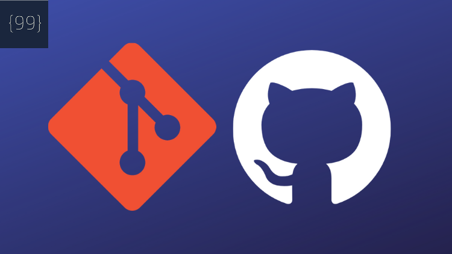

Índice:

O Git é um sistema de controle de versão desenvolvido por Linus Torvalds em 2005
durante a criação do Linux, em que várias pessoa podem contribuir de maneira
simultânea em um mesmo projeto, criando ou editando arquivos já estabelecidos
sem que as modificações sejam sobrescritas, pois são salvas em diversas cópias
no repositório. Esta ferramenta gerencia as alterações definidas ao longo do
projeto e guarda em forma de um histórico de versões.
Funciona por meio de um histórico de alterações, que permite mais de uma pessoa
contribuir em uma versão diferente do mesmo projeto, impedindo que quando uma
modificação ocorra a mesma seja sobrescrita na versão de trabalho de outra
pessoa, ou caso exista um erro, o código pode ser resetado para versões
anteriores no qual estava estável. A ferramenta Git pode ser utilizada por meio
de um terminal, através de comandos, ou inserida em um Ambiente de Desenvolvimento
Integrado, como por exemplo o Visual Code.
A utilização do Git se resume na criação de uma pasta para repositório, a .git,
que será a pasta principal do projeto. Podemos ainda adicionar arquivos a esta
pasta e criar commits, que nada mais é que uma versão do projeto que pode ser
comentada para um melhor entendimento no futuro. Outra funcionalidade
interessante é a criação de ramificações, que é uma forma
de ter uma versão sofrendo alterações de diferentes fontes, separada do projeto
principal ficando livre do acesso ao público até ser analisada, publicada e
posteriormente anexada ao código principal. Ou seja, funciona como uma snapshot
que pode ser criada por outros desenvolvedores e caso autorizada pode passar a
fazer parte do projeto principal.
Comandos:
Git init - cria pasta .git.
Git add - adiciona arquivo a pasta.
Git commit -m "comentario" - cria um commit do projeto.
git checkout -b name - criação de uma ramificação.
Para uma melhor utilização das funcionalidades da ferramenta Git,
recomenda-se a utilização do GitHub.
Deve ser utilizado durante o desenvolvimento de um projeto com mais
de uma pessoa, para que as informações fiquem organizadas e não sejam
sobrescritas. Ou seja, importante para resolver os conflitos entre os
códigos dos desenvolvedores.
Na criação de qualquer código mesmo que de maneira individual,
a ferramenta Git permite que o código retorne a uma versão anterior, podendo
corrigir erros ou entender como o código estava naquele périodo específico.
A criação de um código em paralelo ao código principal com a utilização
das ramificações, isto pode ser muito importante e útil ao desenvolvedor.

O GitHub nada mais é que uma plataforma de hospedagem de códigos fontes,
com funcionalidades Git, como o de controle de versão, é como se fosse
uma rede social, que os posts são códigos fontes, projetos.
Como dito acima, é uma rede social, onde qualquer pessoa pode criar uma conta
e já pode começar a postar seus projetos sendo privados ou Open Source,
e ainda contribuir em outros projetos de outros programadores, como diversos
recursos que relatam problemas ou mesclam repositórios remotos.
Pode ser aplicado quando um projeto tem diversos desenvolvedores
, e que todos trabalham ao mesmo tempo, também em projetos colaborativos ou
para os próprios desenvolvedores.
Pode ser utilizado também para a divulgação de trabalhos.